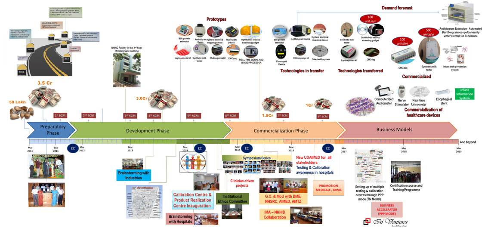

About NHHID
National Hub for Healthcare Instrumentation Development (NHHID) is established by DST under Technology Development & Transfer in Anna University with an initial 5-year grant of 12.4 Crores. This national facility has been formed with collaboration from reputed national institutes and R&D organizations. The NHHID is a platform for integration of Scientists, Engineers, Technologists, Industrialists, Businessmen and Clinicians to promote and accelerate the development of healthcare instrumentation indigenously. It aids in the transfer of basic research ideas from research institutions to private biomedical companies and vice versa. It will mainly carry out R & D on healthcare instruments as required by indigenous industry and healthcare needs. The Calibration center one of the prominent activities of NHHID is being established.
